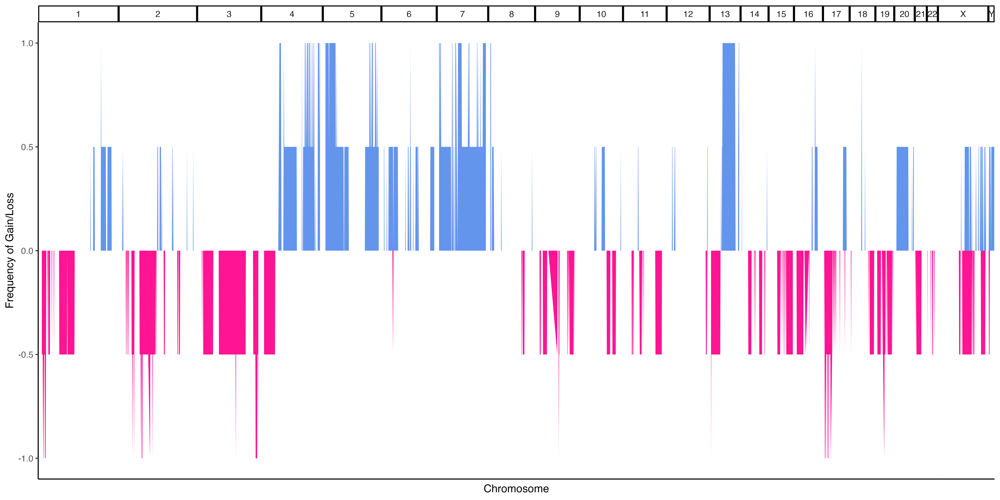
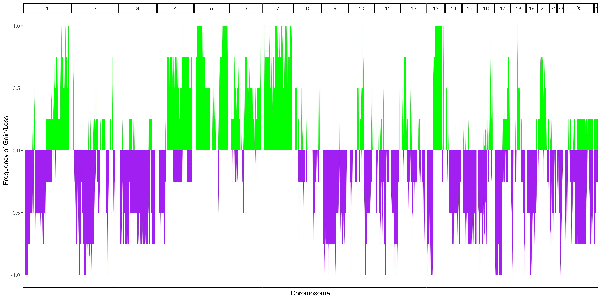
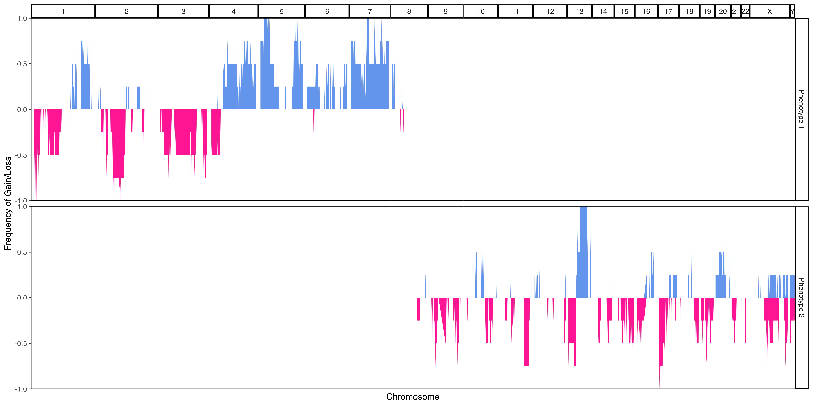
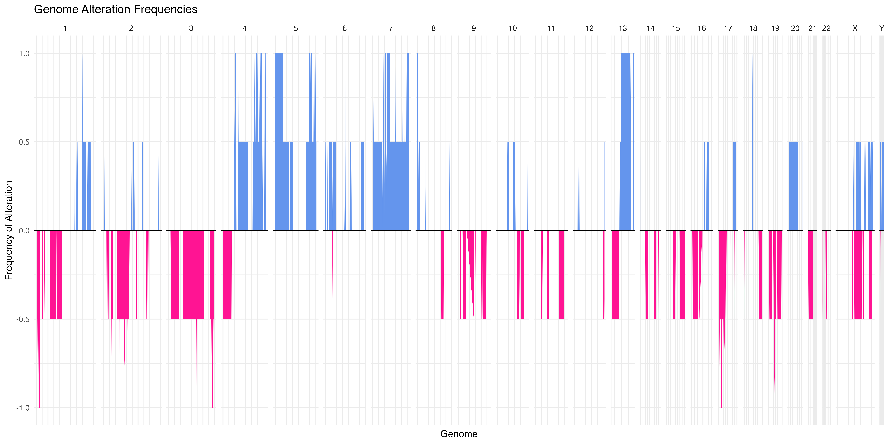

FrequencyPlotExample.RmdFrequency plots are commonly used in copy number analysis in bulk sequencing studies to show how frequently different regions of the genome are altered. A similar approach can be done in single cell data by pseudobulking the cells and then thresholding the values to label each region as a loss or gain for the pseudobulked values.
By default, the makeFrequencyPlot() function will take
group all cells based on their sample of origin (or whatever metadata
column is provided to the group parameter) and take the
mean copy number value for that group at each genomic bin. It will then
perform thresholding to label regions as loss/neutral/gain. As a primary
example, we can begin with the example data and use the default values
for the function.
library(SCCNVis)
obj <- SCCNVis::createPlotObject(example.matrix,
example.cells,
example.granges,
example.meta)
fp.result <- SCCNVis::makeFrequencyPlot(obj)
#SCCNVis::saveCustomPlot(fp.result, "~/path/to/plot.png")
Example 1a. Frequency Plot
As with standard frequency plots, colored regions above 0 indicate that a percentage of our pseudobulked samples have gains in those regions, while colored regions below 0 indicate that a percentage of our pseudbulked samples have losses in those regions. Since our example only has 2 samples, you can see that all values are 0%, 50%, or 100%.
While the default above is the standard use for a frequency plot,
makeFrequencyPlot() includes some additional features that
may help provide additional insights. For example, the pseudobulked
values do not necessarily have to represent samples. In the below
example, they represent subclones identified through clustering (see
Heatmap example). The below example also shows how users can provide
custom filtering thresholds to define gains and losses and how to color
those values with custom colors.
#Calculate distance matrix values
dist <- parallelDist::parallelDist(obj@Matrix)
#Perform hierarchical clustering
hc_re <- hclust(dist, method="ward.D2")
#Dynamically assign clusters
dynamic.kclusters <- dynamicTreeCut::cutreeDynamic(dendro = hc_re,
distM = as.matrix(dist),
deepSplit = 0,
pamRespectsDendro = TRUE
)
#> ..cutHeight not given, setting it to 292 ===> 99% of the (truncated) height range in dendro.
#> ..done.
names(dynamic.kclusters) <- hc_re$labels
obj <- SCCNVis::addMetaData(obj, dynamic.kclusters, colname = "DynamicKClusters")
#Defining a custom thresholding function
#The function will be passed a data.frame with the following format
#Columns: "chrm" "middle" "pos.index" "name" "value"
#Where chrm = seqname from obj@GRanges
# middle = Middle of genomic position (bp)
# pos.index = Numerical index of row
# name = Name of sample (or other pseudobulked group)
# value = Copy number value for the pseudobulked group for this region
#The output of the function is expected to be the a data frame
#that includes these same columns, although this is explored
#further in a later example
custom.data.func <- function(data) {
sd.value <- sd(data$value, na.rm = TRUE)
mean.value <- mean(data$value, na.rm = TRUE)
#Any value > mean + 0.5sd will be considered a gain
data[data$value > mean.value + (sd.value * 0.5),"value"] <- 2 #Gain == 2
#Any value < mean - 0.5sd will be considered a loss
data[data$value < mean.value - (sd.value * 0.5),"value"] <- 0 #Loss == 0
#All other values will be considered neutral
data[data$value != 2 & data$value != 0,"value"] <- 1 #Neutral == 1
return(data)
}
fp.result <- SCCNVis::makeFrequencyPlot(obj,
group = "DynamicKClusters",
data.func = custom.data.func,
gain.color = "green",
loss.color = "purple")
#SCCNVis::saveCustomPlot(fp.result, "~/path/to/plot.png")
Example 1b. Frequency Plot, pseudobulked subclones
As you can see, with our 4 subclones and looser thresholding criteria, we now see greater variety in our frequency plot.
Together with the secondary.group parameter, we can also
use the data.func to introducing a secondary grouping to
our data. This is done by adding a new column to the data.frame during
the data.func modification and providing the name of that
new column to the secondary.group. In this case, we will
change our custom.data.func to use a threshold of 1sd (the
same as the default function used by makeFrequencyPlot()),
but we will label the first half of the data as “Phenotype 1” and the
second half as “Phenotype 2”. This is an arbitrary example, but if you
have real phenotypic (or other data) that can be mapped to the ‘name’
column of the data passed to the data.func, you could
supply that instead.
Note that in our custom.data.func below, the input data
is sorted by genomic region, so by assigning the first half of the data
frame to “Phenotype 1”, we expect that all copy number alterations in
Phenotype 1 will be limited to the first half of the genome, while
Phenotype 2 will only have alterations in the second half of the
genome.
#Custom data function that defines thresholds as mean +/- 1sd
#Also adds arbitrary phenotype data
custom.data.func <- function(data) {
sd.value <- sd(data$value, na.rm = TRUE)
mean.value <- mean(data$value, na.rm = TRUE)
#Any value > mean + 1sd will be considered a gain
data[data$value > mean.value + sd.value,"value"] <- 2 #Gain == 2
#Any value < mean - 1sd will be considered a loss
data[data$value < mean.value - sd.value,"value"] <- 0 #Loss == 0
#All other values will be considered neutral
data[data$value != 2 & data$value != 0,"value"] <- 1 #Neutral == 1
#Add arbitrary phenotypic data
total_rows = nrow(data)
midpoint = round(total_rows * 0.5)
data[1:midpoint,"Phenotype"] <- "Phenotype 1"
data[midpoint:total_rows,"Phenotype"] <- "Phenotype 2"
return(data)
}
#Again, using the DynamicKClusters metadata added previously
fp.result <- SCCNVis::makeFrequencyPlot(obj,
group = "DynamicKClusters",
secondary.group = "Phenotype",
data.func = custom.data.func)
#SCCNVis::saveCustomPlot(fp.result, "~/path/to/plot.png")
Example 1c. Frequency Plot, pseudobulked subclones grouped by arbitrary phenotype
Finally, like the makeLinePlot() function, the output
plot is a ggplot object, which means that users can freely alter the
output like they would a standard ggplot figure. Additionaly,
fp.result$PlotData contains the data.frame used to generate
the plot, so users can create the plot from scratch if they desired. An
example of this customization is shown below.
fp.result <- SCCNVis::makeFrequencyPlot(obj)
final.plot <- fp.result$Plot +
ggplot2::geom_hline(yintercept = 0, color='black') +
ggplot2::labs(x="Genome",
y="Frequency of Alteration",
title="Genome Alteration Frequencies") +
ggplot2::theme_minimal() +
ggplot2::theme(axis.text.x = ggplot2::element_blank(),
axis.ticks.x = ggplot2::element_blank())
#fp.result$Plot <- final.plot
#SCCNVis::saveCustomPlot(fp.result, "~/path/to/plot.png")
Example 1d. Frequency Plot with customization